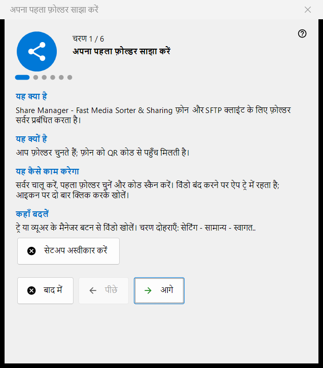
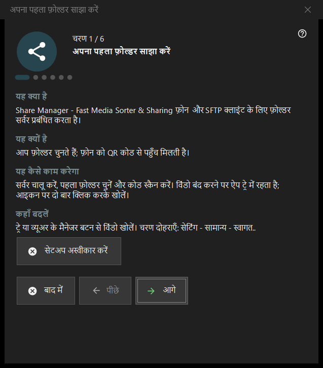

अपना पहला फ़ोल्डर साझा करें
यह किस लिए है
छह चरणों का विज़ार्ड जो आपको शून्य से फ़ोन को परोसे जाने वाले फ़ोल्डर तक ले जाता है: यह सर्वर चालू करता है, पहला फ़ोल्डर चुनता है, पोर्ट और बुनियादी विकल्प तय करता है और स्थिति की जाँच पर समाप्त होता है। यह Share Manager की पहली शुरुआत पर खुलता है और सेटिंग्स से दोबारा चलाया जा सकता है।


इस क्रम में
- परिचय पढ़ें और आगे दबाएँ।
- सर्वर चालू करें पृष्ठ पर बटन को एक बार दबाएँ और व्यवस्थापक के अनुरोध की पुष्टि करें।
- पहला फ़ोल्डर और उसके विकल्प चुनें।
- पोर्ट रखें या बदलें।
- भाषा, स्टार्टअप और स्थानीय नेटवर्क के विकल्प तय करें।
- अंतिम पृष्ठ पर स्थिति देखें, QR कोड खोलें और समाप्त दबाएँ।
तत्व
चरण और बटन
नीचे की पट्टी में चरण N / 6 दिखता है। पीछे और आगे पृष्ठों के बीच जाते हैं, अंतिम पृष्ठ पर आगे समाप्त बन जाता है, बाद में विज़ार्ड बंद करता है और जो आप पहले पुष्ट कर चुके हैं वह रखता है, और सेटअप अस्वीकार करें उसे हमेशा के लिए बंद करता है। हर पृष्ठ पर चार छोटे खंड हैं: यह क्या है, यह क्यों है, यह कैसे काम करेगा और कहाँ बदलें।
सर्वर चालू करें
इस चरण तक सर्वर बंद रहता है। सक्षम करने वाला बटन व्यवस्थापक अधिकार एक बार माँगता है और प्रोग्राम के लिए Windows फ़ायरवॉल का एक नियम जोड़ता है। अनुरोध रद्द करने पर सर्वर बंद रहता है और आप फिर कोशिश कर सकते हैं; यदि वह पहले से चालू है, तो पृष्ठ बताता है कि अनुमति का और अनुरोध नहीं चाहिए।
पहला फ़ोल्डर
एक फ़ोल्डर चुनें, फिर उसका नाम, प्रोफ़ाइल और पहुँच। अभी पहला संसाधन जोड़ें.. संसाधन विज़ार्ड खोलता है। आगे बढ़ने के लिए कम से कम एक फ़ोल्डर चाहिए। सेटिंग सर्वर को भेजी जाती हैं, और फ़ोल्डर मुख्य विंडो की सूची में संपादित किए जा सकते हैं।
पोर्ट
सिस्टम चुनता है एक बार पोर्ट तय करके उसे रखता है; स्थिर पोर्ट: आपको अपनी संख्या लिखने देता है, जैसे राउटर पर पोर्ट फ़ॉरवर्डिंग के लिए। यह संख्या हर QR कोड और .fmscfg फ़ाइल में लिखी जाती है, इसलिए इसे बाद में बदलने से पहले दिए जा चुके कोड काम करना बंद कर देते हैं। फ़ायरवॉल का नियम प्रोग्राम का है, पोर्ट का नहीं।
बुनियादी सेटिंग
इंटरफ़ेस की भाषा, Windows लॉगऑन पर शुरू करें, स्टार्टअप पर प्रबंधक विंडो खोलें और केवल स्थानीय नेटवर्क (इंटरनेट से पहुँच नहीं)। स्थानीय नेटवर्क मोड पोर्ट फ़ॉरवर्डिंग और इंटरनेट का पता बंद कर देता है। Store संस्करण का स्टार्टअप विकल्प Windows की सेटिंग में सँभाला जाता है।
समाप्ति
अंतिम पृष्ठ सर्वर और चुने हुए फ़ोल्डरों की जाँच करके नतीजा दिखाता है; हरी स्थिति का मतलब है कि फ़ोल्डर की पहुँच के साथ कोई साझाकरण सच में चल रहा है। फ़ोन के लिए QR कोड कोड खोलता है और ताज़ा करें जाँच दोहराता है। यदि स्थिति पर ध्यान देना हो, तो कारण मुख्य विंडो में ठीक करें या फ़ोल्डर वाले चरण पर लौटें।
विज़ार्ड दोबारा चलाना
सेटिंग्स - सामान्य - स्वागत.. एक मेन्यू खोलता है जिसमें फ़ोल्डर सेटअप दोहराएँ है, और वह इसी विज़ार्ड को फिर खोलता है।
प्रबंधक सेटिंग · SFTP साझाकरण सेटिंग · एक्सचेंज सर्वर सेटिंग